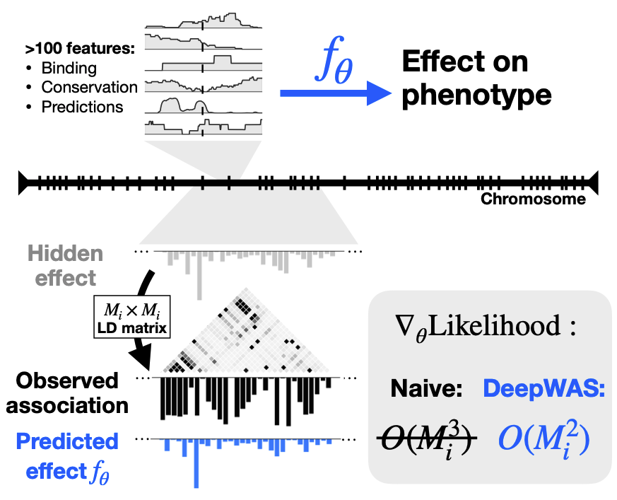
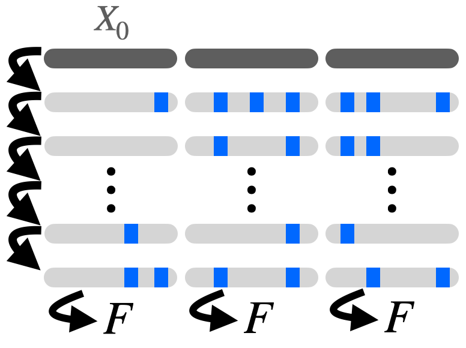
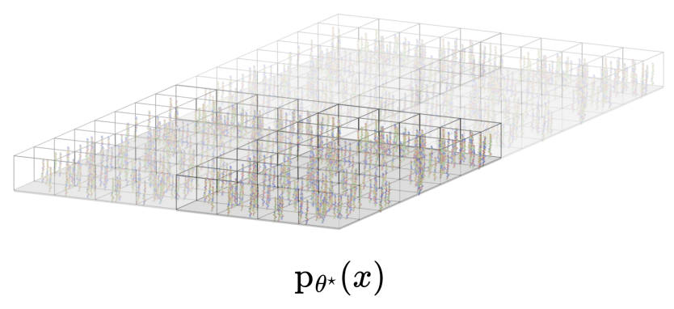
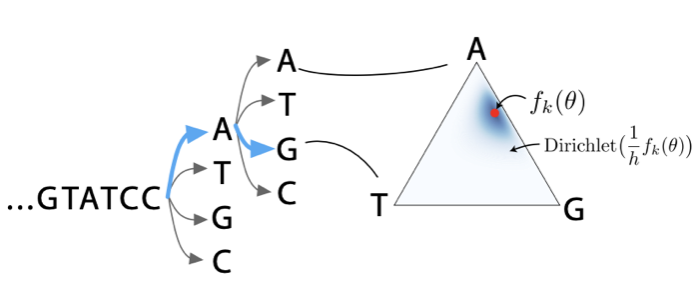
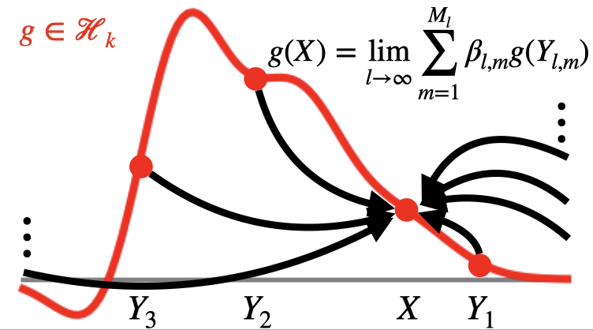
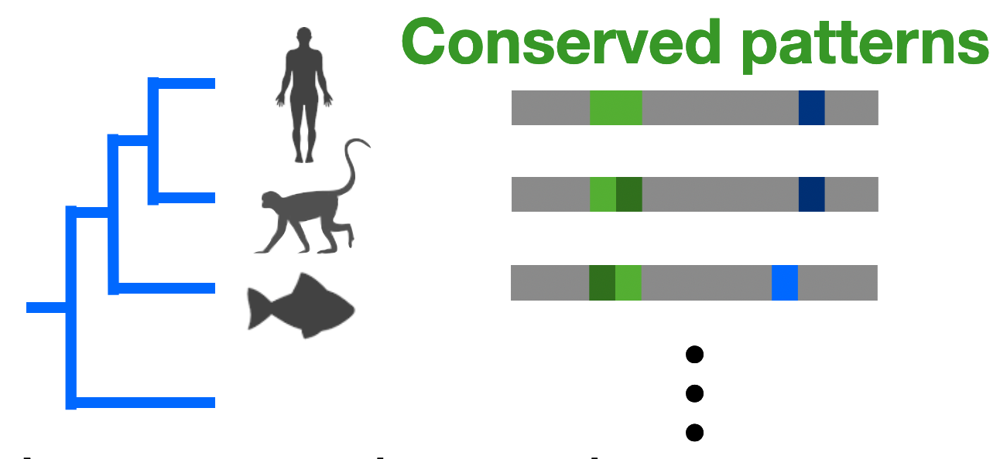
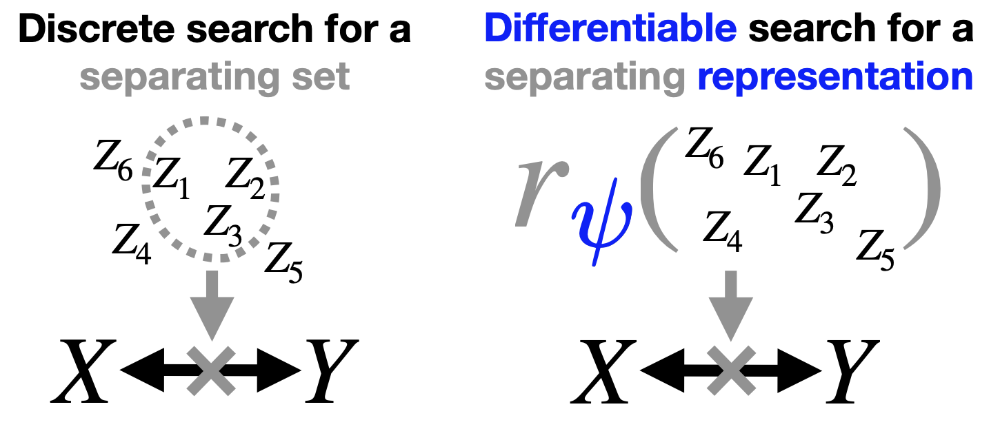
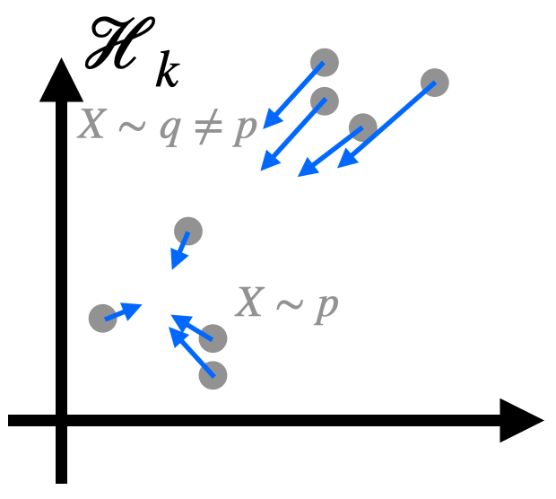

Alan N. Amin
Faculty Fellow / Assistant Professor at NYU Courant Institute.
Host: Wilson Lab
I work on statistical models built on modern, large databases of biological sequences. My projects either build models that can leverage these datasets in new ways, or seek to understand why these models work.
Previously: PhD at Harvard Systems Biology with Debora Marks (2023), Postdoc at Jura Bio (2023), BS in Biochemistry & Mathematics from University of Toronto (2019).

Selected Works
* denotes equal contribution
Scalable, flexible models of large sequence data




Theoretical foundations of modelling discrete sequence data



Non-identifiability and the blessings of misspecification in models of molecular fitness and phylogeny
NeurIPS 2022
🎤 Oral Presentation
"Why do ML models of evolution work despite obvious violations of their assumptions?"
Scalable causal discovery and model evaluation


Kernel-Based Evaluation of Conditional Biological Sequence Models
ICML 2024
"Can we flexibly evaluate the fit of large structure-to-sequence models?"
Teaching
CSCI-102: Data Structures
Looking for undergraduate graders at NYU - please reach out!
Looking for undergraduate graders at NYU - please reach out!